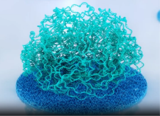
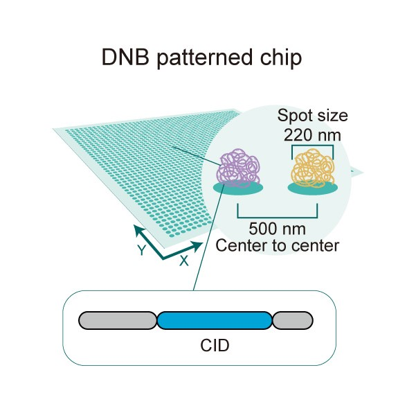

词汇表
为更加清晰、方便地理解 STOmics Tech 的分析工具使用，我们整理了常见的 STOmics 词汇说明。
STOmics 词汇说明
| Term | Definition |
|---|---|
| Stereo-seq Chip T | Used in generating a spatially-resolved 3’ RNA library from biological tissue sections, only for fresh frozen (FF) samples currently. |
| Stereo-seq Chip N | Used in generating a spatially-resolved 3’ RNA library from biological tissue sections, only for formalin-fixed paraffin-embedded (FFPE) samples currently. |
| DNB | DNB NanaBall. DNA nanoball is the product of rolling-circle amplification (RCA) that is linearly amplified from the original circular single-stranded DNA template. DNB is the smallest capture unit on the Stereo-seq Chip.  .png) |
| Resolution/Pitch | Also called the chip resolution/pitch. A center-to-center distance of two adjacent DNBs.  |
| CID | Coordinate ID. Spatial position identifier, the artificially synthesized barcode sequence unique to each spot on the Stereo-seq Chip. |
| MID | Molecular ID. A molecular identifier is an artificially synthesized sequence that is unique to each mRNA molecule captured from the sample. It helps differentiate the number of reads contributed by mRNA expression levels due to amplification. Two copies of native transcripts from the same molecule captured on one DNA nanoball will result in two independent reads with the same CID but different MID. In contrast, two reads with identical CID and MID originated from the same transcript but were amplified. |
| GEF | Gene expression file (GEF) is a data management and storage format designed to support multidimensional datasets and high computational efficiency. Stereo-seq analysis workflow generates bin GEF and cellbin GEF files. |
| GEM | Gene expression matrix (GEM) stores gene spatial expression data. SAW generates multiple gene expression matrix files in the workflow, the basic format requires four columns with a header row that shows the column names. |
Bin & Bin size | Bin (or Square Bin) is the analysis unit on the expression heatmap. A bin is a fixed-sized square in which the expression value in this square is accumulated. Bins are not overlapped. The value followed by "Bin" represents the square side length. For |
| CellBin | A cell bin stands for a region of cell on the expression heatmap recognized by the algorithm (either from image or heat map). Expression within a cell bin region is accumulated, and neighbor cell bins are not overlapped..png) .png) |
.png)
{kind=link}
{kind=link}